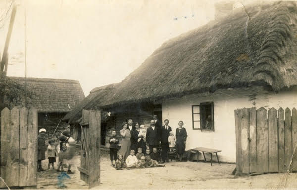
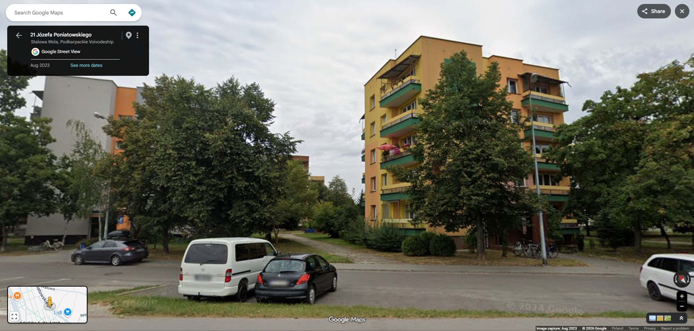

Wtedy i teraz

1932 — Chalupa w Pławie
2026 — Osiedle mieszkalne w Stalowej Woli 1957 — zakład metalurgiczny
1957 — zakład metalurgiczny
 2024 — widok z orbity
2024 — widok z orbity
 1957 — piec hutniczy
1957 — piec hutniczy
 2024 — obraz satelitarny
2024 — obraz satelitarny
 1957 — centrum Stalowej Woli
1957 — centrum Stalowej Woli
 2024 — Google Earth
2024 — Google Earth